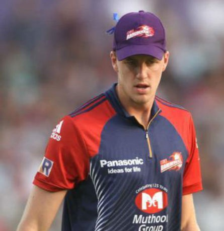

DLF IPL 2012

*Winner: Kolkata Knight Riders

*Team Squad: (Captain - Gautam Gambhir)
(Click the above pic for viewing the scorecard of the IPL Final 2012)
Gautam Gambhir, Sarabjit Ladda, Lakshmipathy Balaji, Rajat Bhatia, Manvinder Bisla, Debabrata Das, Marchant de Lange, Brad Haddin, Iqbal Abdulla, Jacques Kallis, Brett Lee, Eoin Morgan,
Brendon McCullum, Sunil Narine, Yusuf Pathan, James Pattinson, Pradeep Sangwan, Shakib Al Hasan, Laxmi Shukla, Ryan ten Doeschate, Manoj Tiwary, Jaydev Unadkat, Chirag Jani,
Sanju Samson, Iresh Saxena
*Runner ups: Chennai Super Kings

*Team Squad: (Captain - MS Dhoni)
MS Dhoni, Michael Hussey, Murali Vijay, Suresh Raina, S Badrinath, Albie Morkel, Dwayne Bravo, George Bailey, Srikkanth Anirudha, Faf du Plessis, Ravichandran Ashwin, Ben Hilfenhaus,
Ravindra Jadeja, Shadab Jakati, Joginder Sharma, Suraj Randiv, Nuwan Kulasekara, Yo Mahesh, Abhinav Mukund, Wriddhiman Saha, Scott Styris, Sudeep Tyagi, K Vasudevadas, Ganapathi Vignesh,
Doug Bollinger
*Orange Cap Winner: Chris Gayle(WI) : 15 Matches 733 Runs - Royal Challengers Bangalore
*Purple Cap Winner: Morne Morkel(SA) : 16 Matches 25 Wickets - Delhi Daredevils

*Player of the Series: Sachin Tendulkar - Mumbai Indians